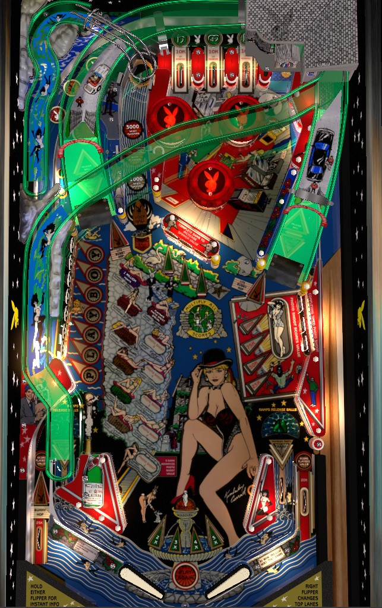

Not to be confused with Playboy (Bally, 1978) or Playboy (Stern Pinball, 2002).
Try to always be in multiball. In single ball play, the spinner lane just to the right of the left ramp is always lit for a lock. Lock 2 balls then shoot either ramp to start multiball. In multiball, every ramp shot scores an increasing jackpot, which starts at 200,000 points. If you get bored of playing for multiball ramps, shoot ramps in single ball play instead; seven ramps in single ball play spells Mansion, which starts a hurry-up where the next ramp shot collects a hurry-up worth up to 1,000,000 points.
Roll through an unlit lane to light it. Lane change is available with either flipper, but both flippers move the lit lanes in the same direction. Lighting all 3 top lanes advances the bonus multiplier, spots a letter in both Mansion and Playboy, and unlights all lanes to be collected again. Top lanes always score 10,000 points. Completing the top lanes when the bonus multiplier is already maxed at 5x lights the spinner/lock lane for extra ball.
Shoot the spinner lane just to the right of the left ramp to lock a ball. Lock is always lit during single ball play. When two balls are locked, shoot either ramp to immediately start multiball. The number of currently locked balls is shown on the back panel of the game; lock stealing is available in a multiplayer game, but it's so easy to score your own locks that the amount of lost progress is basically irrelevant.
During multiball, any ramp shot scores a jackpot. The first jackpot is worth 200,000 points, and every subsequent jackpot is worth 25,000 more than the last, up to a maximum of 425,000 points. Each ramp during multiball also lights a letter in the word Pinball on the back panel of the game; spell Pinball in its entirety to light the spinner lane for extra ball. There is no quick multiball restart for a multiball that ends quickly or before any jackpots are scored, but since lock is always lit during single ball play, such a feature would be redundant.
Rapid-fire jackpots are by far the best way to quickly earn score in this game.
Scoring a ramp when not in multiball awards a letter in Mansion. Completing the top lanes also awards a letter in Mansion. Spell Mansion to start the Million Ramp hurry-up; the next shot to a ramp scores a hurry-up value that starts at 1,000,000 points and starts counting down very quickly after about 5 seconds pass.
Regarding the ramps, there is a somewhat-hidden kicker underneath the left slingshot, just to the right of the left in lane. This kicker throws the ball directly up the playfield, and if it is well calibrated, it should throw the ball up the entire left ramp, scoring that ramp for you.
Hitting a drop target down in the 3-bank on the right starts the Photo Shoot. For 6 seconds, the drop target value is 100,000 points; then it is 75,000 points for 7 more seconds; then it is 50,000 points for the next 9 seconds; then it is 25,000 points for 10 seconds. Completing the drop target bank scores a Photo Shoot as well as the reamining drop target value. If the 10 second timer on the 25,000 point stage runs out, the targets reset and the Photo Shoot must be restarted. Completing a total of 6 Photo Shoots over the course of the game scores a Special.
Hit a flashing Playboy target to light it. Completing the top lanes will also light one Playboy target for you. Light all 7 targets in any order to spell Playboy and earn the currently lit award next to the bank. Possible awards include 50,000 points, 100,000 points, 50,000 points + light out lanes to instantly score Playboy value, 50,000 points + hold bonus, extra ball, or 1,000,000 points. Which award is selected appears to be chosen randomly and cannot be changed; the order listed above is sorted from most to least common.
Hit a flashing target to light it. In normal play, the targets must be hit in order from left to right. Successfully lighting all three targets starts 2x playfield scoring for 20 seconds. While a playfield multiplier is running, completing the center standup targets again- in any order this time- increases the playfield multiplier for 1x and restarts the timer, though the higher the multiplier goes, the less time you get with that multiplier. 2x scoring lasts for 20 seconds; 3x scoring lasts for 18 seconds; 4x scoring lasts for 14 seconds; 5x scoring lasts for 12 seconds. I do not know what happens if the center targets are completed yet again while 5x playfield is running. Playfield multipliers are stated to multiply all scoring in the game, but I do not believe they can be used to multiply a ramp jackpot during multiball or a Mansion Million ramp during single ball play.
Completing the center standups in any fashion also increase the value of the spinner in the lock lane for the rest of the ball. The spinner starts at a value of 100 points per spin, but completing the center standup targets 1, 2, or 3 times increases the spinner value to 1,000, 2,000, or 3,000 points per spin, respectively.
Playboy has a conventional in/out lane setup. In lanes only light to indicate to the player that Million Ramp is running (if lit white) or that the next shot to either ramp starts multiball (if lit green). The right out lane scores 20,000 points, and the left out lane scores 25,000 points. One of the Playboy target awards lights the out lanes for Playboy Value; making an out lane when this is lit instantly scores whatever award is lit in front of the Playboy left standup targets.
The left out lane has a Bunny Hop automatic kickback. It is on at the start of every ball and turns off once used. If the Laser Kick is off, one of the two ramps will be lit with an orange triangle featuring the Playboy bunny logo. Shooting two ramps lit orange in this way re-enables the kickback in the left out lane.
There is a kicker between the left in lane and left slingshot that fires a ball up the left ramp automatically.
There is a very small center peg between and slightly below the flippers.
Top lanes advance the bonus by 2,000 points; I believe all other standup targets and rollover lanes add 1,000 points to the bonus. If there is a max base bonus, it is at least 50,000 points. Completing the top lanes advances the bonus multiplier by 1x, toward the maximum of 5x. There is no mid ball bonus collect. Both base bonus and multiplier are reset every ball unless the 50,000 + Hold Bonus award was collected from the Playboy standup targets on the left.
In competition/novelty play, specials can be set to award points, but I am not sure exactly how many, and there does not seem to be a setting to assign a point value to extra balls at all.
Many score and timer values listed throughout this guide assume default factory settings, and can be decreased for hard mode or increased for easy mode.
Playboy target progress, top lane progress, and Photo Shoot progress can be set to carry over from ball to ball or reset after every drain. Playboy target progress can also be set to carry over between players in a multiplayer game, allowing a player to "steal" a Playboy award that a previous player helped qualify.
On default settings, hitting any flashing Playboy letter will solidly light the next letter in the word, working upwards. This can be changed to Easy mode, where any target can spot any other target, or Hard mode, where each target must be hit individually.
The Bunny Hop kickback can be lit for free at the start of each ball or only at the start of each game, and can require 1 or 2 lit orange ramps to relight.
Letters in Pinball and Mansion can be set to carry over from ball to ball separately for each player, be shared by players to allow for "stealing" of features, or completely reset at the end of every ball.
The Special awarded by completing enough Photo Shoots at the drop target banks can be autopercentaged; if the Special is not being won as often as the game expects, it may require as few as 3 completed Photo Shoots to score the special rather than the usual 6.